NÃO ESTÁ PRONTO PARA JUNTAR. Falta um conserto pequeno, mas grave: em dois casos, uma folha some do PDF.
O caso de verdade aconteceu num projeto do próprio Samuel, o Gradus Primus. Lá, a folha 2 tinha a página da esquerda apagada e "não dividir esta". No fase-1, o PDF sai com 139 páginas. Neste ramo, sai com 138: some a página de rosto ("Curso Básico de Latim, Gradus Primus", imagem b1). O mesmo acontece num livro novo quando a pessoa apaga a página da esquerda e depois aperta "não dividir esta".
O resto funciona como prometido:
Achado para a pergunta ao Samuel. No livro aberto de verdade, o do programa corta letras em muitas folhas, e o implementador não viu: ele olhou 6 folhas do Hugon e 2 do Penido. Eu passei os dois jeitos nas 471 folhas do Hugon e nas 180 do Penido.
Isso já acontecia no programa de antes, então não é defeito novo. Mas pesa na escolha do jeito de fábrica.
Não é "aprovado": só o Samuel marca.
Defeito conhecido (decisão do Samuel, 28/09): moldura dourada e iluminura continuam sendo defeito conhecido. Este item não mexe no filtro: as prévias e o PDF do projeto antigo saíram idênticos aos do
fase-1.
O que foi conferido: ramo fase2-dividir, commit c936d81 (commits 977bf43 a c936d81). Comparei com:
fase-1 (a5ac122);fase2-misto-opcoes (a755087).Cada um rodou numa cópia git archive, com pasta de dados só de teste.
| # | O que | Como | Resultado |
|---|---|---|---|
| 1 | Código do ScanTailor sem mudança | máquina | Bom. Baixei o git do ScanTailor Advanced e conferi o v1.2.1 (5eaac18). Os 50 arquivos novos são idênticos byte a byte ao original, e os 128 de src/ também. A "cola" adviseNumberOfLogicalPages é igual às linhas 205-214 do ProjectPages.cpp original. As três linhas de montagem (FilterData, otsuThreshold, estimatePageLayout) são as mesmas do ScanTailor. Recompilei a DLL a partir das fontes da cópia, numa pasta só minha. Em 416 chamadas do dividir e 52 do limpar pontinhos, a DLL recompilada deu o mesmo resultado que a DLL enviada |
| 1b | Limpar pontinhos e detector de gravura iguais ao ramo de antes | máquina | Bom. O limpar pontinhos deu o mesmo resultado, ponto a ponto, nas 192 combinações (32 páginas-gabarito × 3 forças × 2 DPI). O detector de gravura deu as mesmas 32 máscaras. A st_gravura.dll é o mesmo arquivo (mesma soma) no ramo, no ramo de antes e no fase-1 |
| 2 | Projeto antigo idêntico | máquina + janela | Bom, menos uma coisa grave (ver Bugs). Usei 3 projetos antigos: a cópia do Gradus Primus do Samuel e um Hugon e um Siebmacher montados pelo fase-1. Os três abrem com a mesma divisão. Comparando ponto a ponto com o fase-1, foram iguais 210 prévias e 210 páginas do PDF. Na janela, o Gradus saiu com as mesmas 138 páginas que o fase-1, iguais a 72 e a 150 DPI. A diferença: a página que era só a metade direita de uma folha não dividida sai do PDF. No Siebmacher e no Hugon, isso é o conserto (a folha saía repetida no fase-1). No Gradus do Samuel, a folha some |
| 3 | Na janela real | janela (mensagens nativas) | Bom, com 3 falhas. Livro novo vem sem dividir: 8 folhas viram 8 páginas, sem a aba Onde cortar. Marcar "Dividir" mostra "Jeito de dividir"; escolher "o do ScanTailor" muda o resumo. Na aba Onde cortar funcionaram: trocar o jeito da folha (Siebmacher 74% → 57%; Hugon 121 53% → 46,5% e volta), "não dividir esta" na tabela do Opus, Ctrl+Z e Ctrl+Y. A folha que entrou inteira tem o botão apagado e mostra a dica. O PDF do livro de 8 folhas saiu com 12 páginas, sem nenhuma repetida (cada página casada com a folha de origem, imagem t2). Falhas: a folha que some (b3); o contador "N páginas vão para o PDF" errado; e o aviso ao trocar o jeito do livro (ver Bugs) |
| 3b | "Cortar a beirada da folha vizinha" | janela + olho | Funciona, e come letra, como o implementador disse. Saiu desmarcada. Num livro de 4 páginas, marquei, conferi e processei. O PDF saiu com a Escola 35 cortada dos dois lados, o "Cvij" e o fim das pautas do Graduale 221 cortados, e a Escola 7 rente à direita. O Livro de Horas saiu bem (imagem s1) |
| 4 | Olho nas imagens do implementador | olho | Abri as 31 imagens dele (27 + 4 do modo forçado). Concordo com o que ele viu, com duas correções. (a) No Hugon 1, o do programa corta a 44%, não a 46%. (b) "Hugon: os dois dividem sem cortar letra" não vale para o livro inteiro (ver "O que eu achei a olho") |
| 5 | Tempo | máquina, alternando | Abrir com o do ScanTailor ficou 50% mais lento: +35 s no Hugon. O do programa e o "sem dividir" ficaram iguais ao programa de antes. Ver a tabela |
| 6 | Testes | máquina | pytest arquivo por arquivo (102 arquivos): 1825 passaram, 59 pularam, 0 falharam. teste_botoes.py (cópia git archive, saida_teste própria): 166 ações, 0 falhas |
Quando acontece: a página da esquerda está apagada e a folha está como "não dividir esta".
Novo em modelos.Projeto.paginas_ativas / metade_sobrando: a metade da direita de uma folha não dividida sai sempre da lista. Mas, se a da esquerda estava apagada, a da direita era a única página da folha, e a folha some. Isso acontece de dois jeitos.
fase-1, o PDF tem 139 páginas; neste ramo, 138. Some a página de rosto (b1). Na tela, a folha diz "Esta folha não vai ser dividida." e não avisa nada (b2).Ela diz "139 páginas vão para o PDF, e 1 foram apagadas", mas o PDF saiu com 138. O contador não usa paginas_ativas.
Numa folha que entrou inteira com o livro já marcado para dividir (Escola 7 no livro misto), a dica diz "volte e marque 'Dividir folhas ao meio'". Mas a caixinha já está marcada.
Trocar o jeito do livro depois de conferir pode mudar o número de páginas. No Livro de dividir, foram 15 → 14, porque o Opus deixa de ser dividido. Aí a conferência recomeça, com cópia do trabalho. O aviso diz "Isso acontece quando se muda a opção 'Dividir folhas ao meio'", mas o que mudou foi o jeito. O trabalho feito à mão se perde: o jeito da folha, "não dividir esta" e as páginas apagadas ficam só na cópia.
fase-1, não é deste itemDepois de "não dividir esta", a linha azul "arraste" continua desenhada na folha.
Passei os dois jeitos em todas as folhas de 4 livros, a 150 DPI, como a análise faz. Para cada corte, contei as letras que a linha atravessa: peças do tamanho de letra com tinta dos dois lados da linha. Depois olhei as faixas em volta do corte.
| Livro | Folhas | O do programa: folhas com letra atravessada | O do ScanTailor |
|---|---|---|---|
| Hugon (livro aberto, 471) | 471 | 58 folhas, 203 letras. Olhei as 58 a olho: em mais de 40, a linha passa no fim das linhas da página da esquerda ou dentro do texto (v5) | 9 suspeitas, de 1 letra cada. Olhando, são as 9 na sombra da dobra, sem letra cortada (v6) |
| Penido (xerox, 180) | 180 | 139 com "suspeita". A medida se engana com a sujeira da xerox. Olhei 24 folhas: em várias, a linha corta no começo das linhas da página da direita. Na 109, corta no meio do texto da esquerda (v3, v4) | As suspeitas são a faixa escura da xerox; o corte fica dentro dela |
| Gradus (do Samuel, 70) | 70 | 15 (no máximo 7 letras) | 4 |
| Siebmacher (134, página deitada) | 134 | 64 | 36. Os dois partem a página; o certo é não dividir |
O defeito do do programa vem de antes: ele corta na borda esquerda da sombra da dobra. Quando o texto chega perto da dobra (no meio do Hugon, folhas 110 a 280), a linha cai no texto. Isso pesa na pergunta ao Samuel: hoje "o do programa" é o jeito de fábrica quando se marca "Dividir" (o implementador já marcou isso como pergunta).
| Página | O que vi |
|---|---|
| Siebmacher 7 | O do programa, a 57%, passa no meio do poema e da moldura. O do ScanTailor, a 74%, corta em cima da moldura da direita. O D (não dividir) fica certo |
| Siebmacher 9 | O mesmo. O do programa ainda corta a assinatura "J. Sib|macher" no meio |
| Opus Majus 256 | O do programa não divide (certo). O do ScanTailor corta a tabela ao meio, na coluna "Tertia" |
| Escola 7 | O corte da sobra a 94% passa rente ao fim das linhas |
| Escola 35 | O corte da sobra corta o começo e o fim das linhas (10% e 87%) |
| Graduale 221 | A sobra leva o "Cvij" e o fim das pautas |
| Graduale 222 | O corte a 22% fica rente às claves e às primeiras letras, sem cortá-las |
| Horas 11 | A sobra tira só a beirada; a iluminura fica intacta |
| Palatino 5 | Nada muda |
| Hugon 1, 41, 121, 241, 361, 471 | Nestas 6, os dois acertam a dobra. O do ScanTailor fica no meio da sombra (1, 41, 361, 471) ou rente ao texto da direita (121, 241: perto, sem cortar). Mas, no livro inteiro, não é assim (ver acima) |
| Penido 3 e 91 | Os dois ficam no branco entre as páginas; a linha do endereço "obrascatolicas" é cortada nos dois |
| Modo "forçado" (4 imagens) | Concordo: no Hugon 121, o forçado joga fora uma página inteira (0 a 54%) |
Medido alternando, pela mesma função que a janela usa, com pasta de dados de teste.
O PC estava mais carregado que na medida do implementador: o "antes" deu 70 s, contra 46 s na dele. Por isso, vale a diferença dentro de cada rodada.
| Hugon, 471 folhas, abrir | Rodada 1 | Rodada 2 | Rodada 3 | Média | Diferença |
|---|---|---|---|---|---|
| Programa de antes (dividir marcado) | 67,1 s | 65,8 s | 77,8 s | 70,2 s | – |
| Agora, o do programa | 66,5 s | 72,4 s | 79,6 s | 72,8 s | +2,6 s (+4%, dentro da variação: −0,6 / +6,6 / +1,8) |
| Agora, sem dividir | 60,1 s | 72,7 s | 69,4 s | 67,4 s | −2,8 s |
| Agora, o do ScanTailor | 93,0 s | 103,2 s | 119,2 s | 105,1 s | +35 s (+50%), uns 74 milésimos por folha |
| Escola, 199 folhas, abrir | Rodada 1 | Rodada 2 | Média |
|---|---|---|---|
| Programa de antes | 25,4 s | 23,9 s | 24,6 s |
| Agora, o do programa | 24,3 s | 22,7 s | 23,5 s |
| Agora, o do ScanTailor + corte da sobra | 60,2 s | 56,4 s | 58,3 s (+137%), uns 170 milésimos por folha |
teste_velocidade.py oficial: ele usa o Marial, que não é dividido, e agora o livro novo nem tenta dividir. A medida acima é a que mede este item.fase-1. Os originais do Samuel não foram abertos pelo programa: conferi depois a soma e a data do projeto.json dele.erros.log de verdade do Samuel. Dois scripts meus de imagem (não o programa pilotado) rodaram sem a pasta de dados de teste. Às 21:39:59 e às 21:40:34, cada um deixou um "servidor de páginas caiu adiantando a página…", porque o script terminou com a página seguinte sendo adiantada. Não apaguei: o arquivo é do Samuel. São as últimas linhas do arquivo (a partir da linha 7945).st_original, do 4lex4). Foi segundos depois de criar, e não havia nada além do clone. A regra diz para não apagar nada fora do projeto, mesmo assim. O clone certo continua lá, em st_original_v121.imagens/v1-hugon-119-o-que-sai-de-cada-lado.jpg: o do programa corta a última letra das linhas; o do ScanTailor corta na dobra.imagens/v3-penido-109-o-que-sai-de-cada-lado.jpg: o do programa corta no meio do texto; o do ScanTailor fica na dobra.../imagens/hugon_f041.jpg (do implementador): o caso comum do livro aberto, em que os dois acertam e o do ScanTailor fica mais no meio da dobra.../imagens/opusmajus_p256.jpg (do implementador): o do ScanTailor parte a tabela; o do programa acerta (não divide).../imagens/siebmacher_p009.jpg (do implementador): página deitada; os dois erram, e o certo é não dividir.../imagens/escola_p035.jpg (do implementador): o corte da sobra come letra dos dois lados.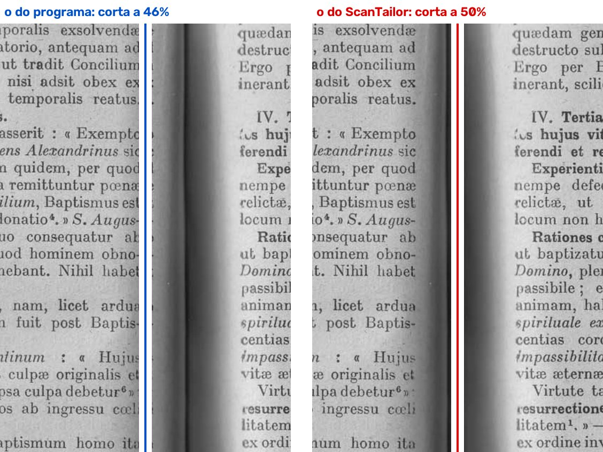
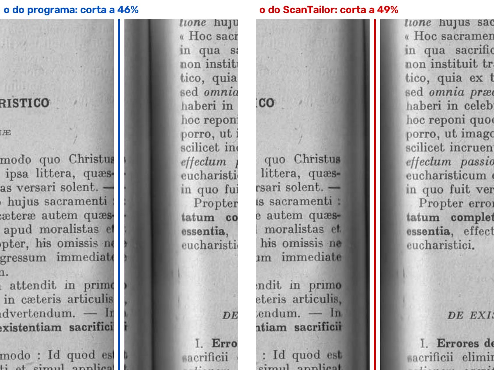
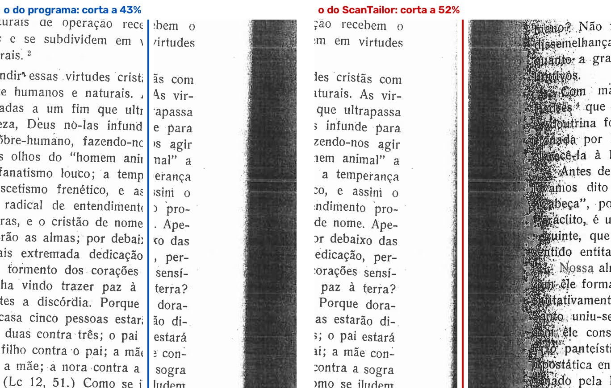
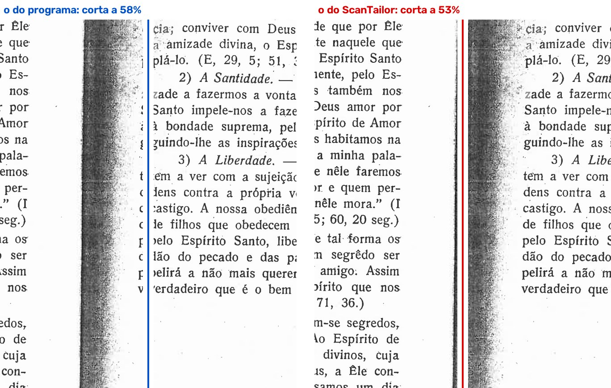
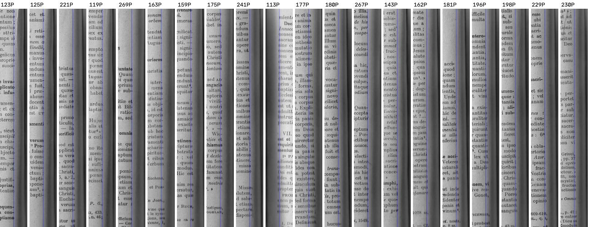
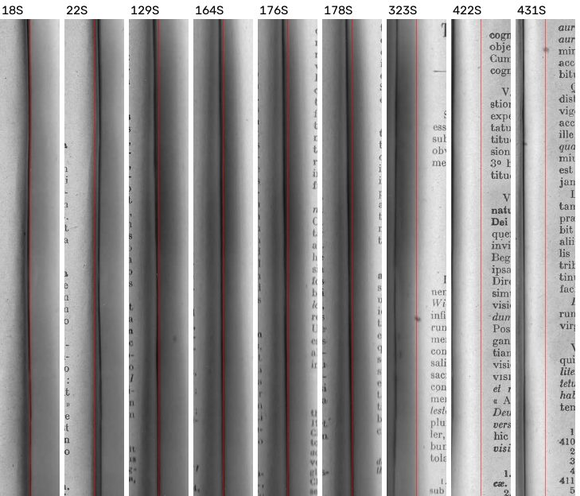
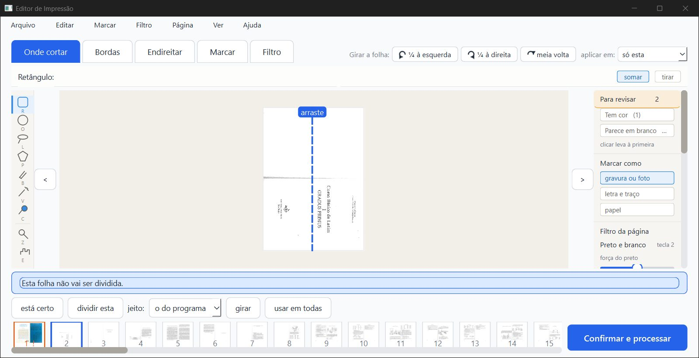
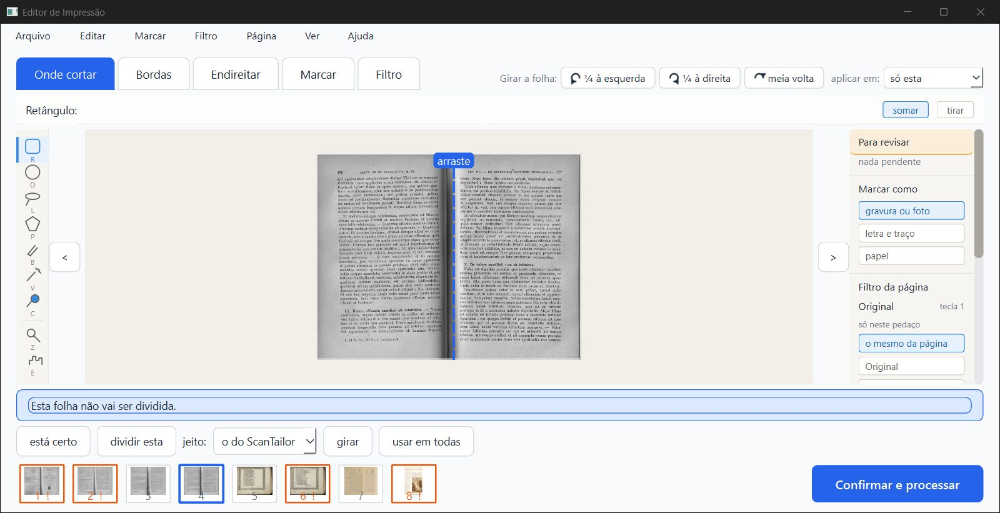
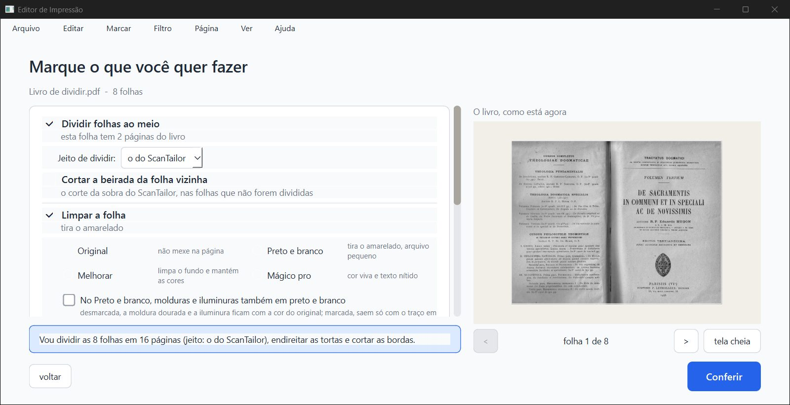
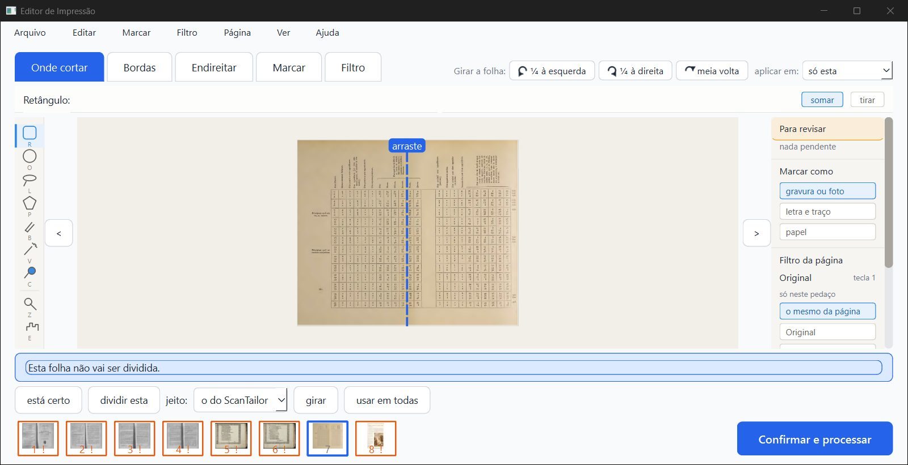
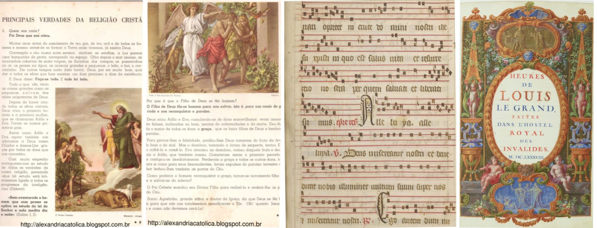
parecer-verificador-dividir.html (.md, .pdf).dados/):varre_*.json;antigo/*.json;dll_*.json;somas_*.json;pytest_partes.log;tempos.log;pdf_gui_1.json.scripts/.Editor de Impressão · gerado em 06/10/2026 às 22:25